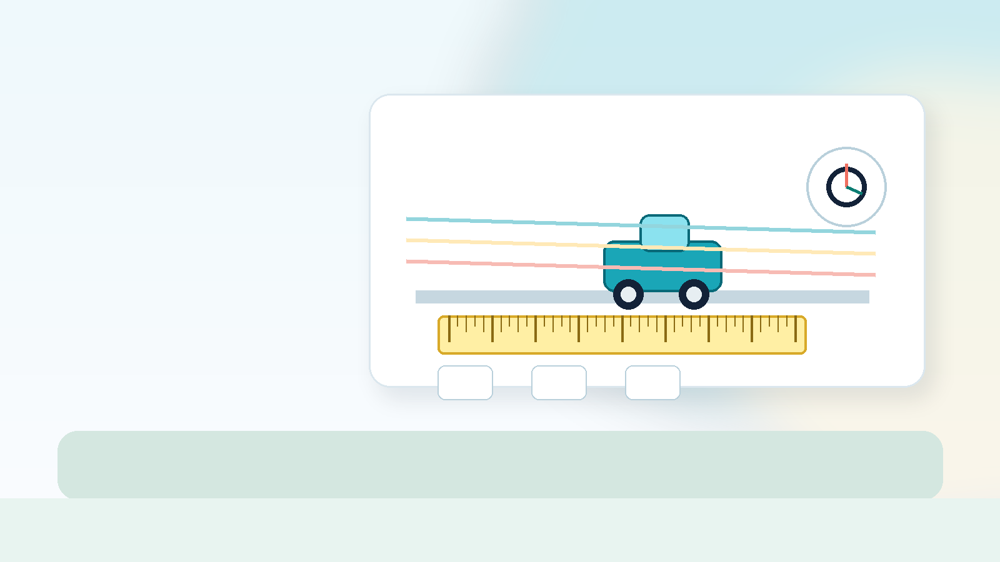

八年级物理上册 · 预习地图
这里把每一章拆成独立页面，方便继续扩展、修改和发布。先完成前三章：机械运动、声现象、物态变化。
学习地图
每章现在都有独立文件，后续继续增加第四章、第五章、第六章时，不会再把所有内容堆在一个页面里。
长度、时间、参照物、速度与平均速度测量。
振动、介质、声音特性、声的利用与噪声控制。
温度计、六种物态变化、温度图像和厨房实践。
完成前三章后，用 8 道题检查预习效果。